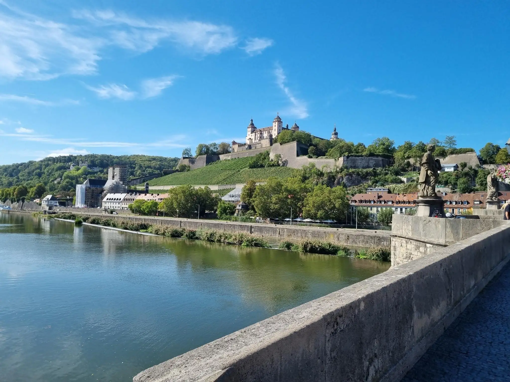

Veitshöchheim – Alte Mainbrücke in Würzburg Runde von Würzburg Hauptbahnhof
01:19 22 km 90m
Wir starten direkt mit dem Fahrrad am Würzburger Hauptbahnhof.
Unterwegs erwartet uns:
Die Mainwiesen in Zellerau...... die Mainwiesen in Würzburg.......Schloss und Rokokogarten in Veitshöchheim...

...und zum Abschluss die Mainbrücke in Würzburg!
Das sagt Komoot dazu:
Leichte Fahrradtour. Für alle Fitnesslevel. Überwiegend befestigte Wege. Kein besonderes Können erforderlich.